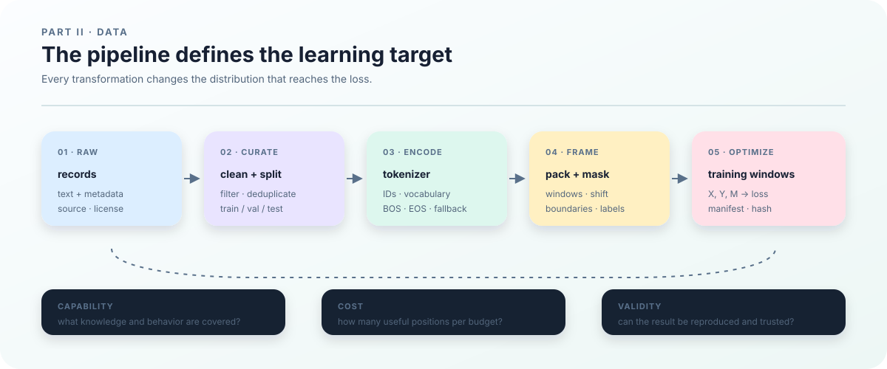

4. Pretraining Data: Distribution, Quality, and Reproducibility¶
Why data is the first design decision¶
Pretraining is not a matter of putting a pile of text on a GPU and waiting for the model to absorb “the internet.” The model only sees the training windows produced by the data pipeline. Source selection, filtering, deduplication, tokenization, packing, and masking together define what the optimizer is asked to learn. Data is therefore part of the model specification, rather than a directory chosen after the architecture.
Data changes the result in at least three ways:
- Capability coverage. Web pages, code, books, papers, and conversations contain different vocabularies, structures, and tasks. Their mixture changes coverage of knowledge, long context, programming syntax, and languages.
- Training cost. Different tokenizers produce different token counts for the same text. Longer sequences also increase activation, attention, and KV-cache costs. Cleaning and deduplication determine how much distinct content fits within a fixed token budget.
- Evaluation validity. If validation contains near duplicates of training, a low validation loss may measure memorization. If filtering removes a class of text, the evaluation no longer represents the intended users. Splitting is part of the evaluation protocol.
This small example shows why file counts do not describe the training distribution:
| Source | Documents | Mean tokens | Share after direct token concatenation | Possible bias |
|---|---|---|---|---|
| Web | 900,000 | 1,000 | about 82% | broad coverage, with templates and noise |
| Code | 50,000 | 2,000 | about 9% | concentrated syntax and tool-use examples |
| Books | 10,000 | 10,000 | about 9% | richer long-form structure, fewer documents |
Overview: trace one short text first¶
This chapter starts with a short running example rather than a large download. We follow “The cat sits.” from a raw record through cleaning, a token stream, a training window, and one loss term. By the end, you should be able to explain why a token enters the loss denominator and run a tiny sharded dataset with a manifest.
Suppose the raw collection has two records: record \(r_1\) contains “The cat sits.” and record \(r_2\) is a web mirror. If cleaning and deduplication keep only \(r_1\), uniform sampling changes from \(P(r_1)=P(r_2)=1/2\) to \(P(r_1)=1\). The file name did not change; the distribution seen by the model did.
To isolate the shift rule, use the invented short sequence \(s=(10,11,12,2)\), with 2 as EOS. These are not the actual byte-tokenizer IDs of the sentence above; we compute real encodings in the tokenizer chapter. A length-3 window becomes \(X=(10,11,12)\), \(Y=(11,12,2)\), and \(M=(1,1,1)\). Inputs and targets differ by one position, connecting a document to the summands in cross-entropy.
The command below encodes the repository JSONL example into shards and writes a manifest. This is data generation; the Dataset and preflight chapters separately check that the loader can read it correctly. Generation alone establishes neither cleaning quality, contamination checks, nor model generalization.
.venv/bin/python -m ttt.data \
--input examples/sample.jsonl \
--output outputs/book-data-contract \
--sharded --tokenizer byte --shard-tokens 256
On success, outputs/book-data-contract/manifest.json and token/mask shards should exist. On failure, check the input path, vocabulary size, and write permission first. The next sections explain how acquisition, cleaning, deduplication, and splitting change this chain.
Direct concatenation makes web tokens dominate; source-uniform sampling gives a different distribution. Both are implementable, but they optimize different objectives. If 30% of web text is duplicated templates, cleaning lowers its effective token count and automatically increases the relative weight of code and books unless the mixture is recomputed. Later sections turn this example into an explicit, reproducible sampling protocol.

What is a tokenizer? Turning text into model-readable tokens¶
A model cannot consume Unicode text directly. A tokenizer is a rule or learned model that encodes text as an integer sequence: it maps a text string \(u\) to tokens \(s\), then maps each token to an ID in a fixed vocabulary. A token need not be a complete word; it may be a byte, character, or subword. The ID is an index, so its numeric value does not express semantic similarity.
The conversion can be written as
where \(\tau\) is the tokenizer, \(V\) is the vocabulary size, and \(L\) is the number of tokens produced for this text. The model's embedding looks up rows from this vocabulary, and the final classification head maps a hidden vector back to the same \(V\) possible next-token IDs. Replacing the tokenizer can therefore change sequence length, the number of training positions, memory cost, and the output-head dimension at the same time.
A tokenizer also defines special-token semantics, such as EOS for a document boundary, BOS for a sequence start, PAD for alignment, and unknown or byte-fallback behavior. These choices affect document boundaries, packing, loss masks, and evaluation, so a tokenizer is part of the data protocol rather than a preprocessing script that can be swapped in at the end. A reproducible run records at least the tokenizer file or model name, revision, vocabulary size, special-token IDs, and normalization rules. Changing any of them requires regenerating token shards and updating the manifest. Chapter 9 covers tokenizer training, vocabulary selection, and efficiency measurements.
Turn the motivation into a measurable distribution¶
We now define two objects that are often left implicit: the training data distribution and the prediction loss. Cleaning, tokenization, packing, and manifests only fit together once these objects are explicit. Following the book-wide notation, a tokenized document stream is \(s\), an input token is \(x\), a next-token target is \(y\), and model parameters are \(\theta\).
Let one raw record be
where \(u_i\) is text and \(m_i\) contains metadata such as source, license, language, time, and document group. Let \(P_{\mathrm{raw}}\) denote the distribution of raw records. For a fixed collection of raw files, the simplest uniform-sampling case is:
If we sample uniformly from \(N\) raw records, then
For two records \(r_1\) and \(r_2\), each has probability \(1/2\). A collection of raw files is not yet the final training distribution. After source selection, cleaning, deduplication, and splitting, we obtain a training collection
Cleaning can modify text or reject a record. Rejection requires renormalizing probabilities: after dropping one of three equally likely records, each survivor has probability \(1/2\), not \(1/3\). Deduplication also compares records, so it is not simply a transformation applied independently to each text. We therefore first fix the cleaned, deduplicated training split and then define how to sample it.
Assign each surviving record a nonnegative weight \(w_i\), with at least one positive weight. The document sampling distribution is
Uniform document sampling, length-weighted sampling, and source-level sampling therefore define different distributions. The number of files alone does not say what the model sees.
Document distribution and training-position distribution are also different objects. Uniformly selecting documents can still give longer documents more loss positions. Sampling token starts uniformly produces another weighting over short documents, long documents, and boundaries. Document count, token count, and supervised loss positions are not interchangeable statistics.
A tokenizer \(\tau\) maps document text to a token sequence:
where \(V\) is the vocabulary size. We must next decide whether to sample inside one document or inside a concatenated stream. If we first select a document and then sample a window within it, call the second step's conditional distribution \(P_\Pi\). Summing over possible documents gives
The repository instead concatenates encoded documents into a fixed stream \(S=(S_1,\ldots,S_T)\), accompanied by a mask stream. A prediction window of length \(L\) needs \(L+1\) consecutive tokens, so its valid starts are \(a=1,\ldots,T-L\). Write \(W_a=(X_a,Y_a,M_a)\) for the shifted window at start \(a\). Uniformly sampling starts gives
The indicator \(\mathbf{1}\) is 1 when its condition holds and 0 otherwise. If two starts produce identical windows, both count. This expression includes windows crossing document boundaries; the preceding document-local formula does not. Document order, EOS, BOS, window length, and masks can all change \(P_{\mathrm{win}}\).
What exactly is prediction loss?¶
Let a training window contain the consecutive token stream
A causal language model uses the token at each position as input and the following token as target:
For model parameters \(\theta\), the loss at position \(t\) is the negative log probability assigned to the observed target token:
If the model emits logits \(\mathbf{z}_\theta(x_{1:t})\) at position \(t\), then
If \(M=(m_1,\ldots,m_L)\) is a loss mask, with \(m_t=1\) for supervised positions and \(m_t=0\) for ignored positions, the average window loss is
The preceding expression requires \(\sum_t m_t>0\). An entirely ignored window has no defined average loss and should be reported separately by data checks. We must also choose how to combine windows: one vote per window or one vote per valid token? Let \(A=\sum_t m_t\ell_t\) be a window's total loss and \(K=\sum_t m_t\) its valid count. The two objectives are
They coincide under conditions such as a fixed valid count. Suppose one window has a single valid position with loss 4, while another has three valid positions with loss 1 each. Averaging window means gives \((4+1)/2=2.5\); pooling valid positions gives \((4+3)/4=1.75\). The latter gives every valid position equal weight and is the convention used here for dataset-level loss.
A finite evaluation observes \(N\) sampled windows. Its token-weighted estimator is
Training also normalizes by valid positions within each minibatch. A random numerator divided by a random denominator is generally not an unbiased estimator of the population ratio, especially when valid counts vary substantially. To aggregate evaluation batches, sum their total losses and valid counts before dividing; do not simply average their mean losses. Gradient updates aim to reduce the chosen training objective, but one update need not reduce every window's loss.
Validation loss uses the same definition with an independent \(P_{\mathrm{val}}\) in place of \(P_{\mathrm{win}}\). Training loss asks whether the model fits the training distribution; validation loss asks how it predicts on another declared distribution. If validation contains near duplicates of training, the second question has not been measured reliably.
This is why the chapter treats data as part of the objective. Changing \(P_{\mathrm{doc}}\), \(\tau\), \(\Pi\), or \(M\) changes the target function even when architecture and optimizer remain unchanged.
How a raw document becomes a training signal¶
The data pipeline is not just a file transfer to the GPU. It is a sequence of transformations that changes the mathematical object being optimized:
flowchart LR
A[Raw file] --> B[Document record and metadata]
B --> C[Clean, deduplicate, split]
C --> D[Tokenizer: text → token IDs]
D --> E[Packing and window sampling]
E --> F[input_ids / labels / loss_mask]
F --> G[Cross-entropy and gradients]
G --> H[Parameter update]For an illustrative token sequence:
| Object | Value |
|---|---|
| Token stream \(s\) | \((10,11,12,2)\) |
Teaching array input_ids (mathematical \(X\)) |
\((10,11,12)\) |
Teaching array labels (mathematical \(Y\)) |
\((11,12,2)\) |
Teaching array loss_mask (mathematical \(M\)) |
\((1,1,1)\) |
These names explain the three mathematical objects. The actual loader returns unshifted tokens and target masks; sequence_loss constructs inputs and targets from tokens.
The window loss is
Masking the final EOS changes both the numerator and denominator. Crossing a document boundary changes the available context. A tokenizer that produces more tokens increases the number of prediction positions and the cost. The training signal is therefore not raw text itself; it is the \((X,Y,M)\) object constructed by these rules.
What each transformation changes¶
Source selection changes support. Web text, code, books, and papers expose different vocabularies, lengths, and structures. A model receives signal only from the regions sampled into training.
Cleaning changes the sample set. Removing navigation pages, corrupted text, and parser failures changes which records remain in \(C_{\mathrm{train}}\). Over-filtering can remove code, mathematics, minority languages, or long documents.
Deduplication changes weights. Repeating one document one hundred times increases its probability under \(P_{\mathrm{doc}}\). Near duplicates across training and validation also destroy evaluation independence.
Splitting changes the evaluation object. Document-group splits and contamination checks determine whether validation windows represent unseen content. A contaminated benchmark can turn low loss or high accuracy into memorization evidence.
Tokenization changes the sample space and cost. The same characters can produce different token sequences. Vocabulary size affects the embedding, output head, sequence length, attention, KV cache, and throughput.
Packing and masks change conditional probabilities. Cross-document packing, EOS retention, and supervised positions all change \(P_{\mathrm{win}}\) or the window loss. Packing is part of the learning protocol, not only a storage optimization.
A concrete mixture example¶
| Source | Documents | Average length | Total tokens |
|---|---|---|---|
| Web | 900,000 | 1,000 | 900M |
| Code | 50,000 | 2,000 | 100M |
| Books | 10,000 | 10,000 | 100M |
Concatenation gives books \(100/1100\approx9.09\%\) of tokens. Uniformly selecting a document and taking exactly one equal-length window from it instead selects books with probability \(10{,}000/960{,}000\approx1.04\%\). Uniformly selecting one of the three sources gives books \(1/3\) of selections. A sampling rule must specify how many windows are taken after selecting a document; uniform document sampling does not automatically increase the weight of long-document sources.
If 30% of web tokens are boilerplate duplicates, cleaning may reduce effective web tokens to 630M. If the mixture is not recomputed, the effective weights of code and books rise automatically. Every stage must report its own denominator rather than only a final token total.
The current BatchStream samples windows from one logical token stream. It does not implement source-level mixture scheduling. The later mixture chapter defines that capability without claiming it already exists here.
Data specifications to settle before training¶
Before a long run, the pipeline should answer:
- Is the source identifiable? Can we locate the release, retrieval time, and license?
- Is quality explainable? Does every filter have a version, threshold, count, and sample audit?
- Are splits trustworthy? Are train, validation, and test separated by document or project boundary, with near-duplicate and contamination checks?
- Is representation consistent? Do tokenizer, special tokens, packing, label shift, and masks agree with the model configuration?
- Is the version recoverable? Can manifest, shard hashes, sampler state, and checkpoint identify the next batch?
Readable data is not necessarily acceptable data. Each requirement needs a saved evidence object and a later preflight check.
Data objects and version boundaries¶
Raw files are immutable downloads or snapshots such as archives, HTML, JSONL, or repository states.
Document records contain extracted text and metadata for cleaning, deduplication, splitting, and boundary management.
Token shards contain integer sequences and supervision masks plus vocabulary, tokenizer version, dtype, shard count, and SHA256 metadata.
Training windows are fixed-length sequences sampled from the token stream and converted into input_ids, labels, loss_mask, and position state.
These objects must not share one vague “data version”. A fixed raw file can produce a new document version after cleaning changes; a fixed document set can produce a new token version after tokenizer changes; fixed shards can produce a new window protocol after sequence length or packing changes.
What the repository currently implements¶
ttt/data.py provides a byte tokenizer and JSONL-to-token conversion. It can write one-dimensional NPY data or sharded token and mask files with a manifest.
ttt/dataset.py validates manifest version, vocab_size, paths, SHA256, token ranges, mask shapes, and mask values, then reads shards with memory mapping. BatchStream uses a NumPy generator to sample windows and stores RNG state, data digest, sequence length, batch size, and seed.
.venv/bin/python -m ttt.data \
--input examples/sample.jsonl \
--output outputs/book-data \
--sharded \
--tokenizer byte \
--shard-tokens 256
shard-tokens is a storage-shard size, not the model sequence length. The current window can cross EOS and document boundaries, and the model has no general “reset attention at EOS” interface. The current loader should therefore be described as continuous-stream packing rather than document-isolated packing.
The manifest also lacks a complete document-offset sidecar, so arbitrary token-to-document tracing remains a requirement for a larger data pipeline. Separating implemented behavior from design requirements is part of the data standard.
The route through the remaining data chapters¶
11_data_acquisition.md: source versions, licenses, downloads, and provenance;12_data_cleaning.md: normalization, format, language, length, and quality filters;13_deduplication.md: exact/near deduplication and its effect on sampling weights;14_split_and_contamination.md: train, validation, test, and contamination boundaries;15_tokenizer.md: tokenizer, vocabulary, and parameter dimensions;16_packing_and_masks.md: packing, label shift, document boundaries, and loss masks;17_dataset_and_manifest.md: shards, manifests, mmap, and recoverable sampling;18_data_mixture.md: source mixtures and deterministic sampling;19_data_preflight.md: hard gates before training;20_baseline_model.md: whether these inputs actually support learning in a dense causal model.
From the next chapter onward, “data” is no longer a vague input name. We trace each object, how it changes the training distribution, and which evidence allows the next run to check it.